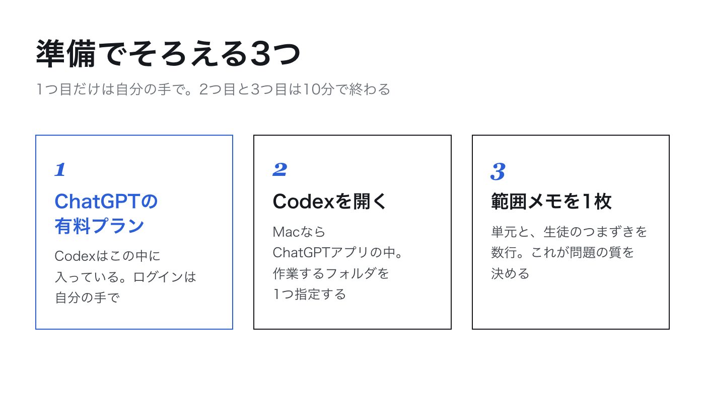

1
ChatGPTの有料プランでログインする
はると先生
Codexって、別のサービスに登録するんですか。
とざき先生
いいえ、ChatGPTの有料プランに含まれています（2026年9月時点）。すでにPlusなどに入っているなら、そのアカウントでそのまま使えます。入っていなければ、ChatGPTの画面から有料プランに切り替えます。ここは普通のWebサービスと同じで、自分の手でやる場面です。
ここだけは守る
ログインは必ずブラウザやアプリの画面で、自分の手で行います。パスワードをAIのチャット欄に打ち込むことはありません。まっとうなAIはパスワードを聞いてきません。逆に、何かがパスワードを直接聞いてきたら、それは入力しない合図です。
アカウントは個人のものを使います。学校や教育委員会に、AIの利用について決まりがあるところもあります。テストの下書きにAIを使うことについて、管理職や教科主任に先に一言たずねておくと、あとが気楽です。
2
Codexを開いてフォルダを指定する
とざき先生
Macなら、ChatGPTのアプリの中にCodexが入っています。アプリを開くと、Codexの画面が選べます。Windowsやそれ以外の入り方は変わっていくので、OpenAIの公式ページの案内が正です。分からなくなったら、チャット画面のAIに「このパソコンでCodexを使う手順を教えて」と聞けば、今の手順を教えてくれます。
はると先生
開いたら、最初に何をするんですか。
とざき先生
仕事をさせるフォルダを1つ指定します。私は「teiki-test」という空のフォルダを作って、それを指定しました。Codexはこのフォルダの中でファイルを作り、フォルダの外を触るときは先生に聞いてきます。
- デスクトップなどに「teiki-test」という名前の空のフォルダを作る
- Codexを開き、作業するフォルダとして「teiki-test」を選ぶ
- このフォルダには、範囲メモ以外を入れない。名簿・答案・教科書のスキャンは入れない
とざき先生
3つ目が大事です。Codexは指定したフォルダの中を読みます。空のフォルダから始めれば、渡すつもりのないものが渡ることはありません。
3
範囲メモを1枚書く
とざき先生
フォルダの中に「hani.txt」というテキストファイルを作って、範囲を書きます。私が見本のテストに使ったメモを、そのままお見せします。
hani.txt ── 見本に使った範囲メモの全文
中学2年 数学 2学期中間テスト 範囲メモ
一次関数（式とグラフ・変化の割合・グラフのかき方・式の求め方）
一次関数と方程式（二元一次方程式のグラフ・連立方程式とグラフ）
一次関数の利用（時間と道のり・水そうの水の量）
生徒の様子：グラフをかくのは得意な子が多い。
変化の割合の意味と、2点の座標から式を求めるところでつまずく子が多い。
はると先生
思ったより短いですね。教科書のページ数とか、入れなくていいんですか。
とざき先生
ページ数は書いてもかまいません。書かないのは、教科書の本文や問題そのものです。範囲メモは、単元名と、自分の言葉で書いた生徒の様子だけ。この「生徒の様子」の2行が、テストを自分のクラスのものにします。
範囲メモに書く3つ
- 単元名。教科書の目次にある言葉でよい
- 授業で扱った範囲。どこまで進んだかが分かる程度に
- 生徒の様子。得意なところと、つまずいているところを1〜2行
4
つながったか確かめる
とざき先生
仕上げに1つだけ確認しましょう。Codexに、範囲メモを読ませてみます。
Codexへの頼み方 ── そのまま貼って使えます
このフォルダにある hani.txt を読んで、内容を日本語で3行にまとめてください。
すると何が起きるかCodexがフォルダの中のファイルを読み、範囲と生徒の様子を3行で返してきます。自分が書いた内容がそのまま返ってきたら、準備は完了です。
やってみよう
第1回の宿題で書いた3行を、hani.txt にしてフォルダに入れてください。上の頼み方で3行のまとめが返ってくるところまで進めば、次回はいよいよテストを作らせます。